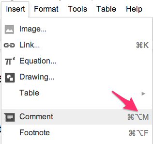
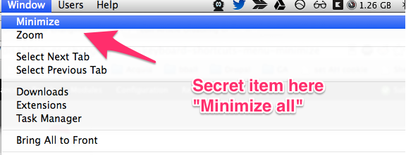
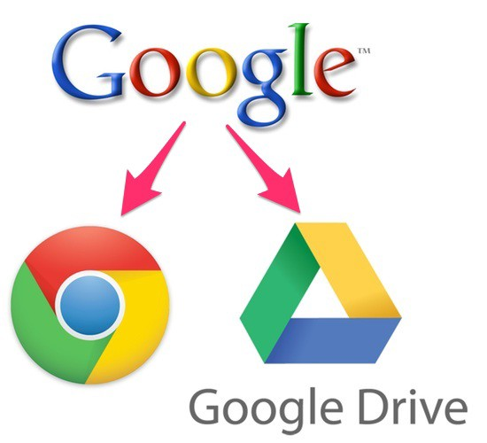
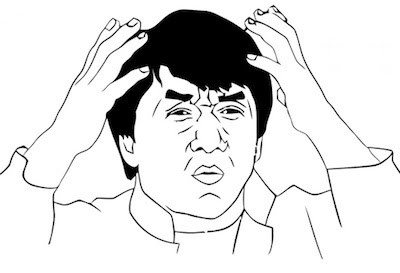
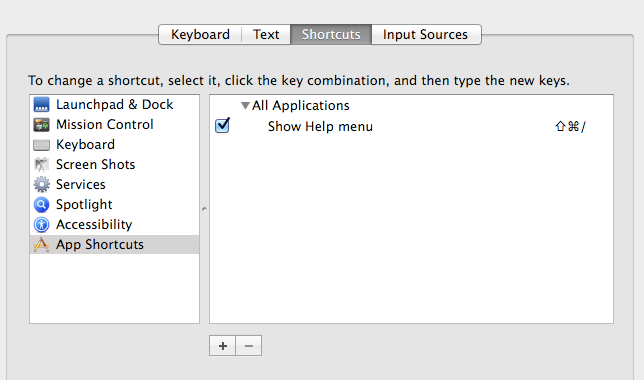
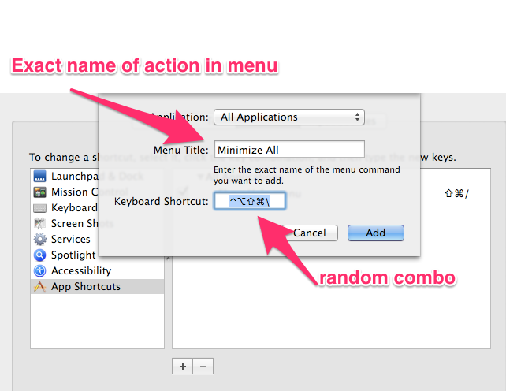

Hi! This is the story of a hidden feature in OSX and a tale of frustration and anger.
I needed to override the keyboard shortcut for “Minimize All” in OSX so I could use the keyboard shortcut to comment in Google docs.
First, a few things about me:
- Use Google docs a lot.
- Have a mac
- Live by keyboard shortcuts.
- Have a lot of opinions
- Like to share them.
- Stubborn as hell.
So when I’m reviewing a colleague’s document in Google Docs, and I want to comment, I looked for the keyboard shortcut (⌥⌘M)

Unfortunately (and you would never know this): OSX already has reserved this combo for “Minimize all”.

BUT IT IS NOT SHOWN IN THE MENU
Stop for a moment and consider that Google creates both Chrome and Google Docs…


The way to fix this is probably the worst bit of usability in OSX. It looks like one of those… “we better make this possible, but let’s just put a stupid hack in for really insistent keyboard cultists.”
To fix:
Go to System Preferences -> Keyboard -> Shortcuts -> App Shortcuts.

Now, enter in EXACTLY the name of the menu item you want to override (Minimize All — but how the hell would you know this), and put in some random keymashing that you will never hit by accident (or something useful if you want to still have a combo for that)

Tada! Now it works.
Originally published at http://www.jacobsingh.name on December 5, 2013.